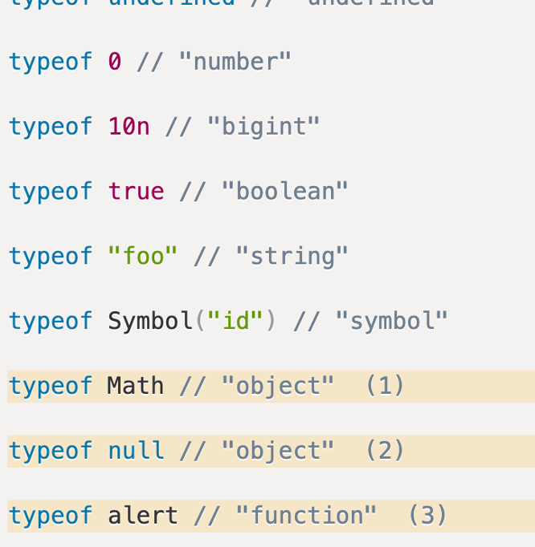
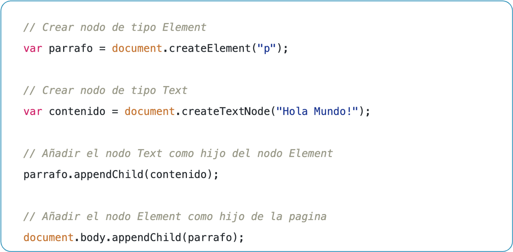
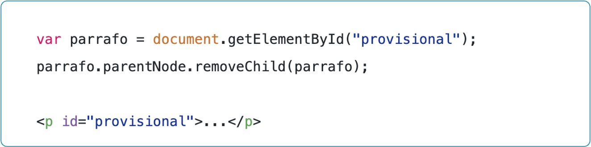

HTML Y CSS
¿Qué es HTML y CSS?
HTML define la estructura y CSS el diseño visual de una página web.

Es un lenguaje de marcado (tags) que usamos para dar un significado a nuestro contenido web.

Lenguaje de reglas de estilo que usamos para aplicar estilo a nuestro contenido HTML.

Estructura de una Página Web
JavaScript
¿Qué es JavaScript?
- Su primera publicación fue en 1995.
- Lenguaje compilado del lado del cliente.
- Lenguaje que nos permite modificar contenido dentro de nuestro sitio web.
- Lenguaje que utiliza scripts (secuencia de comandos).

- Lenguaje de programación que entienden los navegadores
- Permite agregar interactividad a las páginas web.
- Permite crear paginas web dinámicas.
Características
- Almacenamiento de variables.
- Ejecución de operaciones.
- Responder a eventos.
- Accionar eventos por medio del DOM.
- Permite crear contenido de actualización dinámica, controlar multimedia, animar imágenes… casi todo.
Ejemplo:
document.querySelector("button").addEventListener("click", function() {
alert("¡Botón clickeado!");
});
Estructura
- Semicolons
- Statements
- Comments
- Variables
Variables
Variables
- Es un nombre que se asigna para almacenar data.
- Podemos declarar una o múltiples en una sola línea.
Declaración
Usamos let, const y var para declarar variables.
Ejemplo:
let nombre = "Juan";
const PI = 3.1416;
var edad = 25;
-
Es recomendable usar
letyconstpor su alcance más seguro. - La diferencia es que const no cambia durante el tiempo.
Tipos de Datos
JavaScript tiene 7 tipos de datos primitivos.
Para encontrar el tipo utilizamos typeof
Condicionales
Los condicionales permiten ejecutar código basado en ciertas condiciones.
Ejemplo:
let edad = 18;
if (edad >= 18) {
console.log("Eres mayor de edad");
} else {
console.log("Eres menor de edad");
}
DOM
¿Qué es el DOM?
- Document Object Model (DOM)
- El DOM es la estructura de objetos que representa un documento HTML.
- El DOM representa la página web para los navegadores.
- El DOM es una representación del documento HTML.
Manipulación del DOM
- Maneja nuestro html como un árbol estructurado
- Cada nodo representa un objeto del document.
- Permite manipular los nodos por medio de la programación.
- JS nos permite conectar al DOM por medio del cliente (browser).
Ejemplo:
document.getElementById("titulo").textContent =
"¡Hola, JavaScript!";
Nodos del DOM
Acceso a nodos
Al tener nuestro árbol de DOM podremos acceder a las propiedades de cada elemento, esto lo podemos realizar por medio de dos métodos alternativos para acceder a un nodo específico:
- acceso a través de sus nodos padre
- acceso directo.
getElementByTagName
getElementsByTagName(nombreEtiqueta)
obtiene todos los elementos de la página cuya etiqueta sea igual
que el parámetro que se le pasa a la función.
let parrafos = document.getElementsByTagName("p");
console.log(parrafos);
let primer_parrafo = parrafos[0];
let enlaces = primer_parrafo.getElementsByTagName("a");
getElementById
getElementById(id)
obtiene el elemento de la página cuyo atributo id sea igual al
parámetro que se le pasa a la función.
let titulo = document.getElementById("titulo");
console.log(titulo);
getElementsByClassName
getElementsByClassName(nombreClase)
obtiene todos los elementos de la página cuya clase sea igual al
parámetro que se le pasa a la función.
let elementos = document.getElementsByClassName("parrafo");
console.log(elementos);
querySelector
querySelector(selector)
obtiene el primer elemento de la página que cumpla con el selector
que se le pasa a la función.
let parrafo = document.querySelector("p");
console.log(parrafo);
querySelectorAll
querySelectorAll(selector)
obtiene todos los elementos de la página que cumplan con el
selector que se le pasa a la función.
let parrafos = document.querySelectorAll("p");
console.log(parrafos);
Creando a nodos
Elimiando a nodos
Modificación de nodos
Una vez que hemos accedido a un nodo, podemos modificar sus propiedades y atributos.
- textContent
- innerHTML
- style
- setAttribute
Ejemplo:
document.getElementById("titulo").textContent =
"¡Hola, JavaScript!";
Ejemplo:
document.getElementById("titulo").innerHTML =
"¡Hola, JavaScript!";
Ejemplo:
document.getElementById("titulo").style.color = "red";